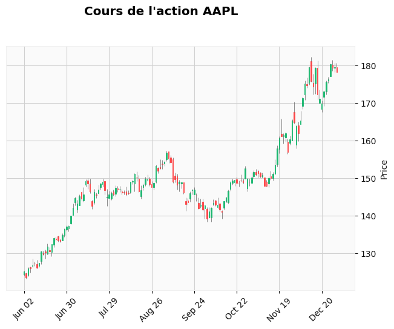

How detrended data behave with candlestick chart#
The whole data are detrended using close price (chosen arbitrarily amongst open / close / high / low).
This way, the detrended data can be plotted on candlestick chart.
Otherwise, open / close / high / low prices may cross each other.
1import mplfinance as mpl
2import pandas as pd
3
4from src.utils.misc import init_notebook
1init_notebook()
Choose detrend method
1detrend_model_name = "LinearMADetrend"
2model_options = "window-100"
1raw_data_folder = "data/raw"
2processed_data_folder = (
3 f"data/processed_data/detrend_data/{detrend_model_name}/{model_options}"
4)
5stock_name = "AAPL"
1df = pd.read_csv(
2 f"{raw_data_folder}/{stock_name}.csv", parse_dates=["Date"], index_col="Date"
3)
4print(f"{df.shape = }")
5
6df_detrend = pd.read_csv(
7 f"{processed_data_folder}/{stock_name}.csv",
8 parse_dates=["Date"],
9 index_col="Date",
10)
df.shape = (756, 6)
---------------------------------------------------------------------------
FileNotFoundError Traceback (most recent call last)
Cell In[5], line 6
1 df = pd.read_csv(
2 f"{raw_data_folder}/{stock_name}.csv", parse_dates=["Date"], index_col="Date"
3 )
4 print(f"{df.shape = }")
----> 6 df_detrend = pd.read_csv(
7 f"{processed_data_folder}/{stock_name}.csv",
8 parse_dates=["Date"],
9 index_col="Date",
10 )
File ~/work/stock-analysis/stock-analysis/.venv/lib/python3.13/site-packages/pandas/io/parsers/readers.py:1026, in read_csv(filepath_or_buffer, sep, delimiter, header, names, index_col, usecols, dtype, engine, converters, true_values, false_values, skipinitialspace, skiprows, skipfooter, nrows, na_values, keep_default_na, na_filter, verbose, skip_blank_lines, parse_dates, infer_datetime_format, keep_date_col, date_parser, date_format, dayfirst, cache_dates, iterator, chunksize, compression, thousands, decimal, lineterminator, quotechar, quoting, doublequote, escapechar, comment, encoding, encoding_errors, dialect, on_bad_lines, delim_whitespace, low_memory, memory_map, float_precision, storage_options, dtype_backend)
1013 kwds_defaults = _refine_defaults_read(
1014 dialect,
1015 delimiter,
(...) 1022 dtype_backend=dtype_backend,
1023 )
1024 kwds.update(kwds_defaults)
-> 1026 return _read(filepath_or_buffer, kwds)
File ~/work/stock-analysis/stock-analysis/.venv/lib/python3.13/site-packages/pandas/io/parsers/readers.py:620, in _read(filepath_or_buffer, kwds)
617 _validate_names(kwds.get("names", None))
619 # Create the parser.
--> 620 parser = TextFileReader(filepath_or_buffer, **kwds)
622 if chunksize or iterator:
623 return parser
File ~/work/stock-analysis/stock-analysis/.venv/lib/python3.13/site-packages/pandas/io/parsers/readers.py:1620, in TextFileReader.__init__(self, f, engine, **kwds)
1617 self.options["has_index_names"] = kwds["has_index_names"]
1619 self.handles: IOHandles | None = None
-> 1620 self._engine = self._make_engine(f, self.engine)
File ~/work/stock-analysis/stock-analysis/.venv/lib/python3.13/site-packages/pandas/io/parsers/readers.py:1880, in TextFileReader._make_engine(self, f, engine)
1878 if "b" not in mode:
1879 mode += "b"
-> 1880 self.handles = get_handle(
1881 f,
1882 mode,
1883 encoding=self.options.get("encoding", None),
1884 compression=self.options.get("compression", None),
1885 memory_map=self.options.get("memory_map", False),
1886 is_text=is_text,
1887 errors=self.options.get("encoding_errors", "strict"),
1888 storage_options=self.options.get("storage_options", None),
1889 )
1890 assert self.handles is not None
1891 f = self.handles.handle
File ~/work/stock-analysis/stock-analysis/.venv/lib/python3.13/site-packages/pandas/io/common.py:873, in get_handle(path_or_buf, mode, encoding, compression, memory_map, is_text, errors, storage_options)
868 elif isinstance(handle, str):
869 # Check whether the filename is to be opened in binary mode.
870 # Binary mode does not support 'encoding' and 'newline'.
871 if ioargs.encoding and "b" not in ioargs.mode:
872 # Encoding
--> 873 handle = open(
874 handle,
875 ioargs.mode,
876 encoding=ioargs.encoding,
877 errors=errors,
878 newline="",
879 )
880 else:
881 # Binary mode
882 handle = open(handle, ioargs.mode)
FileNotFoundError: [Errno 2] No such file or directory: 'data/processed_data/detrend_data/LinearMADetrend/window-100/AAPL.csv'
1df_6_months = df[df.index > pd.Timestamp("2021-06-01")]
2df_detrend_6_months = df_detrend[df.index > pd.Timestamp("2021-06-01")]
1mpl.plot(
2 df_6_months,
3 type="candle",
4 title=f"Cours de l'action {stock_name}",
5 style="yahoo",
6)
7mpl.plot(
8 df_detrend_6_months,
9 type="candle",
10 title=f"Cours de l'action {stock_name} sans la tendance",
11 style="yahoo",
12)
